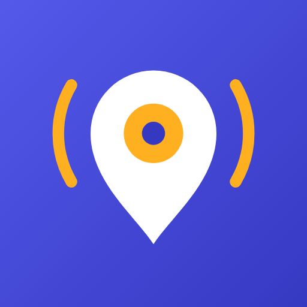

StopWakeTerms of use
A helpful alarm, not a guarantee
StopWake estimates when you will reach your stop from your phone’s location. GPS can be inaccurate or unavailable, especially underground, and Android or battery savers may stop apps. Don’t rely on StopWake as your only way to get off at the right stop.
Free with ads
StopWake is free to use and shows ads. You can watch a video in Settings for a break from ads; there is nothing to buy.
Your account
An account is optional. Keep your password private. We may suspend accounts that abuse the service, for example by attacking it or misusing promo codes. You can delete your account at any time.
Map and stop data
Maps © OpenStreetMap contributors (ODbL), served by OpenFreeMap. Stop data comes from OpenStreetMap and public transport open data. It may contain errors.
Liability
StopWake is provided as it is. To the extent the law allows, we are not liable for missed stops or their consequences. Nothing in these terms limits rights you have under the consumer law of your country.
Changes
We may update these terms. If a change is important, we tell you in the app before it applies.